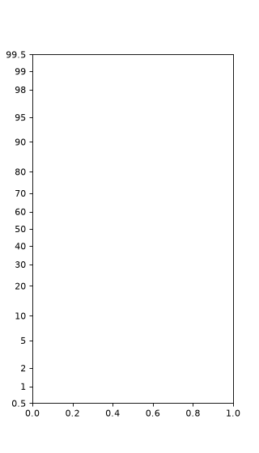

probscale API Reference#
- class probscale.probscale.ProbScale(axis: Axis | None, **kwargs: object)[source]#
Bases:
ScaleBaseA probability scale for matplotlib Axes.
- Parameters:
- axismatplotlib axis or None
The axis whose scale will be set.
- distscipy.stats probability distribution, optional
The distribution whose
ppf/cdfmethods should be used to compute the tick positions. By default, a minimal implementation of thescipy.stats.normclass is used so that scipy is not a requirement.- as_pctbool, optional (default = True)
Toggles the formatting of the probabilities associated with the tick labels as percentages (0 - 100) or fractions (0 - 1).
- nonpos{‘mask’, ‘clip’}, optional (default = ‘mask’)
How to handle non-positive axis limits. Accepted for compatibility with matplotlib’s log scales and stored on the scale instance, but not currently applied to the transform.
Examples
The most basic use:
>>> from matplotlib import pyplot >>> import probscale >>> fig, ax = pyplot.subplots(figsize=(4, 7)) >>> ax.set_ylim(bottom=0.5, top=99.5) (0.5, 99.5) >>> ax.set_yscale('prob')

- name = 'prob'#
- set_default_locators_and_formatters(axis: Axis) None[source]#
Set the locators and formatters to specialized versions for probability scaling.
- Parameters:
- axismatplotlib.axis.Axis
The axis whose locators and formatters will be set.
- get_transform() Transform[source]#
Return the
Transforminstance that maps probabilities or percentages to display coordinates.
- limit_range_for_scale(vmin: float, vmax: float, minpos: float) tuple[float, float][source]#
Limit the domain to positive values.
Non-positive limits are replaced with the smallest positive value in the data,
minpos.- Parameters:
- vmin, vmaxfloat
The current data limits.
- minposfloat
The smallest positive value in the data.
- Returns:
- vmin, vmaxfloat
The adjusted data limits.